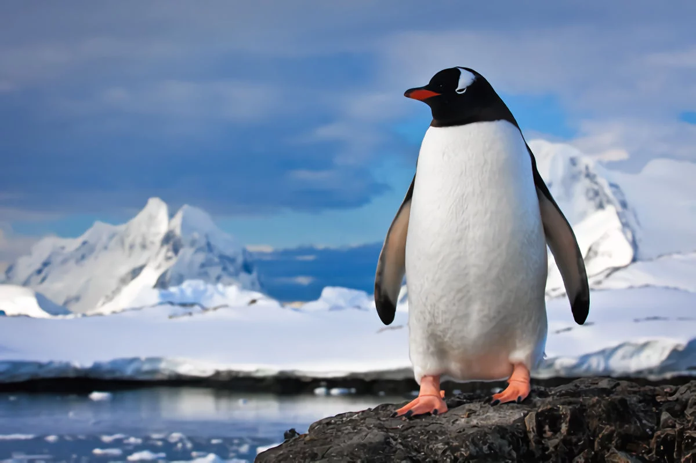
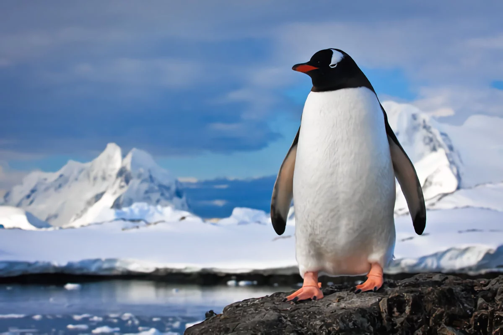

Llamamos pingüinos a las distintas especies de aves pertenecientes a la familia Spheniscidae, únicas aves del planeta que en vez de volar, utilizan sus alas para bucear en el mar y capturar su alimento. Son especies casi exclusivas del hemisferio sur del planeta. Este nombre proviene del galés pen (“cabeza”) y gwyn (“blanca”), término que en Gran Bretaña daban a especies parecidas pero alejadas biológicamente. Sin embargo, los primeros europeos en observar un pingüino no fueron británicos, sino los tripulantes de la primera expedición del navegante portugués Vasco da Gama (ca. 1460-1542), quienes los apodaron “pájaros niño” o “pájaros bobos” debido a su forma peculiar de caminar.
 
